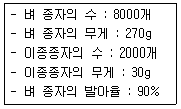

식물보호기사 (2010-09-05 기출문제)
1과목: 식물병리학
1. Gibberella fujikuroi의 불완전세대는?
- Fusarium oxysporum
- Fusarium moniliforme
- Fusarium lateritium
- Fusarium roseum
(정답률: 68%)

2. 기주특이적 독소를 생산하는 병원균은?
- Aspergillus flavus
- Alternaria mali
- Gibberella zeae
- Gibberella fujikuroi
(정답률: 53%)
3. 벼 오갈병 바이러스의 매개충은?
- 끝동매미충
- 이화명충
- 애멸구
- 진딧물
(정답률: 92%)
4. 그람염색반응은 세균의 어느 구조에 의하여 결정되는가?
- 편모
- 선모
- 세포질
- 세포벽
(정답률: 81%)
5. 병원균의 기생성 분화와 가장 관계가 먼 것은?
- 획득저항성
- 레이스
- 판별품종
- 맥류의 줄기녹병균
(정답률: 44%)
6. 병에 감염된 식물로부터 계속해서 인근 식물에 병을 일으키는 전염원은?
- 1차 전염원
- 2차 전염원
- 확대 전염원
- 월동 전염원
(정답률: 65%)
7. 오존(O3)에 의한 식물 피해의 표징으로 옳은 것은?
- 잎의 적변
- 잎가 마름
- 줄기 괴저
- 표징 없음
(정답률: 63%)
8. 오동나무 빗자루병을 매개하는 해충은?
- 복숭아혹진딧물
- 담배장님노린재
- 애멸구
- 미국흰불나방
(정답률: 71%)
9. 식물체의 비정상적인 생장을 초래하는데 관여하는 식물 호르몬이 아닌 것은?
- auxin
- gibberellin
- ethylene
- suppressor
(정답률: 83%)
10. 여름포자()를 형성하지 않는 것은?
- 포플러 잎녹병균
- 배나무 붉은별무늬병균
- 밑 줄기녹병균
- 잣나무 털녹병균
(정답률: 73%)
11. 진균(true fungi)에 대한 일반적인 설명으로 거리가 먼 것은?
- 세포벽은 주로 섬유소로 구성되었다
- 진핵생물이다.
- 타급영양(heterotrophy)을 한다.
- 주로 실모양이다.
(정답률: 59%)
12. 50% 농도의 유제를 1%로 희석하여 10a당 100L를 뿌리려 할때 소요약량은? (단, 50% 유제의 비중은 1.25 이고, 1% 희석액의 비중은 1이라 가정한다.)
- 400mL
- 800mL
- 1600mL
- 3200mL
(정답률: 50%)
13. 식물병원균의 레이스(race)란 종 이하의 분류 단위로서 무엇을 의미하는가?
- 형태와 병원성이 같다.
- 형태와 병원성이 다르다.
- 형태는 같으나 병원성이 다르다.
- 형태, 병원성과는 아무런 관계가 없다.
(정답률: 75%)
14. 병 키다리병에 관한 설명으로 틀린 것은?
- 육묘기의 본엽 2~3엽기부터 발생한다.
- 병원균은 Blumera graminis이다.
- 대형분생포자는 초승달 모양이다.
- 무발병지에서 채종하고 염수선한 후 종자소독한다.
(정답률: 76%)
15. 균류의 유성포자가 아닌 것은?(오류 신고가 접수된 문제입니다. 반드시 정답과 해설을 확인하시기 바랍니다.)
- 난포자
- 자낭포자
- 유주자
- 담자포자
(정답률: 70%)
16. 소나무 혹병균의 중간기주는?
- 매자나무
- 낙엽송
- 향나무
- 참나무류
(정답률: 71%)
17. 식물 세포벽을 분해하는 효소가 아닌 것은?
- 기주특이적 독소(HST)
- 셀룰로오스분해효소
- 펙틴분해효소
- 큐틴분해효소
(정답률: 81%)
18. Pectobacterium(Erwinia) 속 무름병의 가장 대표적인 진단 기준은?
- 점무늬
- 기형
- 시들음
- 악취 발생
(정답률: 80%)
19. 벼 흰잎마름병이 발생하고 전파되는데 가장 좋은 환경조건은?
- 규산 과용
- 이상 건조
- 태풍과 침수
- 이상 저온
(정답률: 86%)
20. 뽕나무 오갈병의 병원은?
- 바이러스
- 파이토플라스마
- 세균
- 곰팡이
(정답률: 87%)
2과목: 농림해충학
21. 농약의 부작용에 대한 설명으로 틀린 것은?
- 잠재곤충이 주요해충으로 등장할 수 있다.
- 먹이사슬에 의한 농약의 축적을 야기할 수 있다.
- 약제저항성 해충의 출현으로 약효가 떨어진다.
- 동물성이 복잡해지고 밀도회복이 빠르다.
(정답률: 90%)
22. 중국으로부터 비래하여 오는 해충이 아닌 것은?
- 혹명나방
- 멸강나방.
- 이화명나방
- 벼멸구
(정답률: 68%)
23. 보통 1년에 2회 발생하고 수피사이나 지피물밑 등에서 번데기로 월동하며 유충이 기주식물을 가해하는 해충은?
- 솔나방
- 미국흰불나방
- 천막벌레나방
- 밤나무혹벌
(정답률: 75%)
24. 유효적산온도(Degree days: DD)를 이용하여 파밤나방 발생을 예측하려 한다. 파밤나방 알에서 성충 우화까지 발육영점온도가 12℃일 때 266DD가 소요된다. 이때 평균 25℃의 조건에서 알에서 우화까지의 경과기간은?
- 15.5일
- 18.0일
- 20.0일
- 22.5일
(정답률: 42%)
25. 바이러스를 매개하는 곤충이 아닌 것은?
- 복숭아혹진딧물.
- 담배가루이
- 애멸구
- 담배거세미나방
(정답률: 69%)
26. 반전현상(resurgence)에 대한 설명으로 옳은 것은?
- 약제처리 후 해충밀도의 회복 속도가 느린 현상
- 약제처리 후 해충밀도의 회복 속도가 급격하게 빨라지는 현상
- 해충이 2종 이상의 약제에 대하여 저항성을 나타내는 현상
- 한 약제에 대하여 저항성을 나타내는 계통이 다른 약제에는 도리어 감수성인 현상
(정답률: 67%)
27. 이세리아깍지벌레의 방제를 위하여 이용하는 곤충으로 가장 적합한 것은?
- 노랑좀벌
- 애꽃등애
- 줄침노린재
- 베달리아무당벌레
(정답률: 78%)
28. 생물농약이 아닌 것은?
- Difluvenzuron
- 애꽃노린재
- 칠레이리응애
- Bacillus thuringiensis
(정답률: 75%)
29. 응애가 곤충과 다른 점은?
- 홑눈이 있다.
- 절지동물이다.
- 다리가 6마디로 되어있다.
- 기관이나 숨문으로 호흡한다.
(정답률: 69%)
30. 먹이가 있는 장소를 동료들에게 알려주는 것으로, 먹이를 발견한 개미가 집으로 돌아오는 길에 뿌려두는 페로몬은?
- 길잡이페로몬
- 경보페로몬
- 성페로몬
- 집합페로몬
(정답률: 85%)
31. 일반적으로 곤충의 소화관은 세 부분으로 나뉘는데, 그 중 내배엽에서 기원된 것은?
- 전장(foregut)
- 중장(midgut)
- 후장(hindgut)
- 식도(esophagus)
(정답률: 83%)
32. 수간에 난괴로 산란하여 손쉽게 난괴를 제거함으로써 효과적으로 구제할 수 있는 해충은?
- 매미나방
- 미국흰불나방
- 복숭아심식나방
- 솔나방
(정답률: 52%)
33. 소나무좀의 화학적 방제를 위한 약제 살포시기로 가장 적합한 것은?
- 2월 중순~3월 상순
- 3월 중순~4월 중순
- 4월 하순~5월 중순
- 5월 하순~6월 중순
(정답률: 50%)
34. 곤충이 휴면하는 시기는?
- 추운 겨울뿐이다.
- 더운 여름뿐이다.
- 아무 때나 한다.
- 종에 따라 일정한 시기에 한다.
(정답률: 83%)
35. 곤충의 통신에 이용되는 화학적 통신이 아닌 것은?
- 개미가 위협을 받을 때 분산 또는 공격적인 행동을 유도하는 물질
- 지나간 흔적으로 남겨두는 물질
- 암컷의 성적 준비를 알려주는 물질
- 배추흰나비 암컷의 날개에서 반사되는 자외선
(정답률: 86%)
36. 농산물 수출입시대를 맞아 병*해충의 침입 및 도입을 차단하는 것이 중요한 문제로 대두되고 있다. 우리 나라에서 식물방역법이 제정 공포된 연도는?
- 1945년도
- 1951년도
- 1961년도
- 1971년도
(정답률: 61%)
37. 곤충 및 생물 분류의 기본이 되는 단위는?
- 과
- 종
- 속
- 강
(정답률: 79%)
38. 곤충의 기관 중 식도하신경절()에 의해 운동과 감각신경의 지배를 받지 않는 것은?
- 더듬이
- 작은턱
- 큰턱
- 아랫입술
(정답률: 66%)
39. 솔잎혹파리의 피해가 가장 심한 수종은?
- 잣나무
- 리기다소나무
- 곰솔(해송)
- 방크스소나무
(정답률: 79%)
40. 풀잠자리 목(目)의 일반적 특징이 아닌 것은?
- 유충은 3쌍의 다리가 있다.
- 유충은 물에서만 산다.
- 유충, 성충은 모두 식충성이다.
- 유충의 배에는 다리가 없다.
(정답률: 53%)
3과목: 재배학원론
41. 수해가 유발될 때 작물체 내에 가장 많이 집적되는 물질은?
- 옥살초산
- 피루브산
- 에탄올
- 젖산
(정답률: 68%)
42. 저장 중에 작물의 종자가 발아력을 상실하는 원인과 가장 관계가 적은 것은?
- 원형질 단백의 응고
- 효소의 활력 저하
- 저장양분의 소모
- 호흡의 감소
(정답률: 52%)
43. 방사성 동위원소의 농업적 이용에 대한 설명으로 틀린 것은?
- 유전적 돌연변이의 창출
- 영양기관의 맹아 촉진효과에 의한 휴면타파
- 작물체 내의 영양성분의 이동 추적
- 살균 및 살충효과를 이용한 식품저장
(정답률: 48%)
44. 토양산성화의 원인으로 가장 거리가 먼 것은?
- 빗물에 의한 염기 용탈
- 염화가리, 황산암모니아 등의 유입
- 토양유기물의 분해
- 인산, 마그네슘의 보급
(정답률: 76%)
45. 간척지 논의 특성과 재배법에 대한 설명으로 옳은 것은?
- 점토 함량이 적고 황산이 많이 생성된다.
- 지하수위가 낮아 심한 환원상태를 보인다.
- 석회시용을 피한다.
- 질소는 유안비료보다 요소비료가 적합하다.
(정답률: 47%)
46. 광에너지를 효율적으로 이용할 수 있는 이상적인 콩의 초형으로 거리가 먼 것은?
- 가지를 적게 치고 가지가 짧다.
- 꼬투리가 주경에 많이 달리고 밑에까지 착생한다.
- 잎자루가 짧고 일어선다.
- 잎이 크고 두껍다.
(정답률: 61%)
47. 논토양(환원상태)에서 원소의 주요 존재형태가 아닌 것은?
- CH4, CH3COOH
- Fe2+, Mn2+
- H2PO4, AlPO4
- N2, NH4+
(정답률: 62%)
48. 요소 비료를 성분량으로 10a당 10kg 주고자 한다. 주어야 할 비료 실량은?(단, 성분량은 46%임)
- 약 66.7kg
- 약 47.6kg
- 약 28.6kg
- 약 21.7kg
(정답률: 52%)
49. 벼 재배에서 냉온을 만나 출수가 가장 지연되는 생육단계는?
- 유수형성기
- 생식세포의 감수분열기
- 출수기
- 유속기
(정답률: 59%)
50. 재배에 적합한 토성의 범위가 넓은 작물의 순서로 옳은 것은?
- 담배 ＞ 밀 ＞ 콩
- 콩 ＞ 담배 ＞ 고구마
- 팥 ＞ 담배 ＞ 과수
- 콩 ＞ 양파 ＞ 담배
(정답률: 53%)
51. 고랭지에서 주로 종묘를 생산하는 작물은?
- 감자
- 고구마
- 밀
- 호박
(정답률: 81%)
52. 종자의 수명에 가장 영향을 적게 미치는 조건은?
- 종자의 수분함량
- 저장습도
- 저장온도
- 광선
(정답률: 73%)
53. 다음 시료의 순활종자(pure live seed)는?

- 64%
- 72%
- 81%
- 90%
(정답률: 62%)
54. 감자의 휴면타파에 가장 유효한 것은?
- MH-30
- IAA
- gibberellin
- 2,4-D
(정답률: 65%)
55. 벼의 침수피해는 생육단계에 따라 다른데, 그 피해가 비교적 작은 시기는?
- 분얼초기
- 유수형성기
- 수잉기
- 출수개화기
(정답률: 60%)
56. 연작 장해가 가장 큰 작물은?
- 옥수수
- 고구마
- 호박
- 아마
(정답률: 70%)
57. 다음 중 벼의 관수해()가 가장 심하게 나타나는 수질은?
- 흐르는 맑은 물
- 흐르는 흙탕물
- 정체한 맑은 물
- 정체한 흙탕물
(정답률: 81%)
58. 다음 중 요수량()이 가장 적은 작물은?
- 호박
- 완두
- 감사
- 수수
(정답률: 80%)
59. 벼 품종의 만식적응성과 가장 관련이 깊은 특성은?
- 묘대일수감응도
- 내비성
- 내건성
- 저온발아성
(정답률: 71%)
60. 광합성에 가장 효과적인 광은?
- 녹색광
- 황색광
- 적색광
- 주황색광
(정답률: 81%)
4과목: 농약학
61. 약해가 일어나는 조건으로 가장 거리가 먼 것은?
- 장마철 보르도액의 살포
- 고온, 고광도시 석회황합제 사용
- 낙엽 후 기계유 유제의 살포
- 살포약제의 고농도 살포
(정답률: 75%)
62. BP(밧사)원제 0.4kg으로 2%분제를 만들려고 할 때 소요되는 증량제의 양은? (단, 원제의 함량은 94%이다.)
- 1.84kg
- 4.60kg
- 18.4kg
- 46.0kg
(정답률: 59%)
63. 유제()에 대한 설명으로 옳지 않은 것은?
- 수화제보다 살포액의 조제가 편리하다.
- 수화제보다 약효가 다소 낮다.
- 수화제보다 제조비가 높다.
- 수화제보다 포장, 수송, 보관이 어렵다.
(정답률: 63%)
64. 농약 원제를 물에 녹이고 동결방지제를 가하여 제제화한 제형은?
- 유제
- 액제
- 수화제
- 수용제
(정답률: 64%)
65. 농약을 살포할 때 분제 입제가 살포기의 동력에 의하여 목적장소까지 날아가는 물리적 성질을 무엇이라 하는가?
- 토분성
- 분산성
- 비산성
- 부착성
(정답률: 72%)
66. 다음 중 유기인제 살충제가 아닌 것은?
- MEP제
- PAP제
- DDVP제
- NAC제
(정답률: 66%)
67. 농약 제조시 반죽시설이 필요한 농약의 제형은?
- 조립식 입제
- 흡착식 입제
- 액상수화제
- 수용제
(정답률: 60%)
68. 농약관리법상 잔류성에 의한 농약의 분류로서 옳은 것은?
- 작물잔류성농약, 토양잔류성농약, 수질오염성농약
- 논토양잔류성농약, 밭토양잔류성농약, 작물잔류성농약
- 작물잔류성농약, 토양잔류성농약, 어독성농약
- 수질오염성농약, 작물잔류성농약, 중금속잔류성농약
(정답률: 68%)
69. 자체검사 및 신청검사시 입제에 대한 최대모집단 수량은 얼마로 정해져 있는가?
- 1톤
- 10톤
- 50톤
- 100톤
(정답률: 80%)
70. 다음 중 생장조절제로 사용할 수 있는 것은?
- Oxadiazon
- Butachor
- Molinate
- 2,4-D
(정답률: 64%)
71. 담배 식물에 들어있는 천연살충 성분은?
- 톡시카롤(toxicarol)
- 아나베이신(anabasine)
- 수마트롤(sumatrol)
- 엘립톤(elliptone)
(정답률: 66%)
72. 다음 농약 중 살균제가 아닌 것은?
- mancozeb
- mepronil
- thiram
- parathion
(정답률: 74%)
73. 다음 중 응애를 방제하는데 가장 적합한 약제는?
- 디코폴(Dicofol)
- 메토밀(Methomyl)
- 플루아지남(Fluazinam)
- 캡탄(Captan)
(정답률: 59%)
74. acetylcholine이 축적되어 신경의 이상흥분을 일으켜 약제 효과를 나타내는 것은?
- 비소제
- 유기인제
- 유기염소제
- 유기불소제
(정답률: 63%)
75. 다음 중 카바메이트계 농약의 일반적인 구조식은?
- R2-NCOOX
- (CH3O)2-POOCX
- R2-NCSSX
- ((CH3)2N)2-POF
(정답률: 65%)
76. 가비중이 1.⑤인 isoprothiolane 유제(50%)100mL로 0.⑤% 살포액을 조제하는데 필요한 물의 양은 몇 L인가?
- 20
- 25
- 1⑤
- 204
(정답률: 70%)
77. 어떤 살충제에 대하여 이미 저항성이 발달한 해충이 한번도 사용한 적은 없지만 작용기구가 같은 살충제에 대하여 저항성을 나타내는 현상은?
- 교차저항성
- 복합저항성
- 단일약제저항성
- 선천적저항성
(정답률: 75%)
78. 우리나라의 농약 독성구분에 대한 설명으로 옳지 않은 것은?
- 독성구분은 세계보건기구(WHO)의 분류 방법을 채택하고 있다.
- 독성구분은 일반독성, 환경독성, 잔류독성으로 구분한다.
- 농약의 독성구분은 농약을 사용하는 농민의 안전을 최우선으로 한다.
- 고독성 이상의 농약은 취급제한 기준을 정하여 특별 관리하고 있다.
(정답률: 69%)
79. 농약의 구비조건으로 가장 거리가 먼 것은?
- 약효가 확실할 것
- 약해가 없을 것
- 저장성이 좋을 것
- 독성이 강할 것
(정답률: 86%)
80. 다음 중 요소계 제초제는?
- 아파론(linuron)
- 2,4-D
- 벤설라이드
- 론스타(Oxadiazon)
(정답률: 69%)
5과목: 잡초방제학
81. 잡초에 대한 벼의 경합력을 높이는 재배 방법은?
- 소식재배를 한다.
- 직파 재배를 한다.
- 이앙 재배를 한다.
- 무경운 재배를 한다.
(정답률: 74%)
82. 중금속 및 질소나 인산 등으로 오염된 물을 회복시킬 수 있는 수질 정화능력을 가진 대표적인 잡초는?
- 올방개
- 물옥잠
- 바람하늘지기
- 여뀌바늘
(정답률: 84%)
83. 우리나라 논잡초의 발생양상에 관한 설명으로 틀린 것은?
- 직파재배 논에는 사마귀풀, 피, 물달개비가 우점한다.
- 1년생 제초제 연용으로 다년생잡초의 우점이 심하다.
- 잡초성벼는 습답직파재배 논에서만 발생한다.
- 춘경 및 추경의 감소로 다년생잡초 발생이 많은 경향이다.
(정답률: 70%)
84. 종합적 방제법에 대한 설명으로 틀린 것은?
- 제초제 약해와 환경오염을 줄일 수 있다.
- 화학적 방제를 배제하고 생태적 방제와 예방적 방제를 주로 사용한다.
- 여러 가지 방제법을 상호 협력적으로 적용하는 방법이다.
- 잡초 군락의 크기가 감소되고 작물의 생산력이 증대되는 효과가 있다.
(정답률: 81%)
85. 작물과 잡초간의 경합에 관여되는 주요한 요인이 아닌 것은?
- 광
- 수분
- 영양분
- 제초제 내성
(정답률: 80%)
86. 작물과 잡초의 경합에 있어서 최대 경합기간은?
- 개화 후부터 성숙기 전반
- 생육초기부터 생육전체 기간의 3/4에 해당하는 기간
- 작물의 전체 생육기간의 1/4내지 1/3기간에 해당하는 생육초기
- 생육중기부터 후기
(정답률: 73%)
87. 제초제 사용을 결정하기 위하여 고려해야 할 사항으로 가장 거리가 먼 것은?
- 작물의 종류와 품종
- 잡초의 종류와 발생시기
- 잡초의 밀도와 분포
- 잡초의 개화기와 성숙기
(정답률: 56%)
88. 8000ppm을 퍼센트 농도로 바꾸면?
- 0.08%
- 0.8%
- 8%
- 80%
(정답률: 66%)
89. 논농사를 지을 경우 일년생 제초제를 수년간 처리했을 때 다음 잡초 중 가장 많이 번무하게 될 가능성이 높은 것은?
- 피
- 바랭이
- 물달개비
- 올방개
(정답률: 51%)
90. 수용성이 아닌 원제를 아주 작은 입자로 미분화시킨 분말로서 물에 분산시켜 사용하는 것은?
- 수화제
- 수용제
- 유제
- 입제
(정답률: 72%)
91. 잡초와 작물과의 경합조건에 대한 설명으로 틀린 것은?
- 같은 초종 중에서 개체 간에 일어나는 경합을 종내경합이라고 한다.
- 식물경합은 둘 이상의 식물 간에 각각 어느 특정요인이나 물질이 필요량보다 부족할 때 일어난다.
- 잡초와 작물 간에 경합이 심할 때 작물수량은 증가한다.
- 초종이 다른 식물 간에 일어나는 경합을 종간경합이라고 한다.
(정답률: 84%)
92. 세계적으로 문제 잡초이며, 우리나라 밭에서 가장 많이 발생하는 잡초는?
- 피
- 향부자
- 바랭이
- 물달개비
(정답률: 52%)
93. Tammes(1964)가 구분한 농약의 상호작용(interaction)효과에 해당하지 않는 것은?
- 상가작용(addition)
- 길항작용(antagonism)
- 결합작용(conjugation)
- 상승작용(synergism)
(정답률: 68%)
94. 암발아 잡초종은?
- 광대나물
- 바랭이
- 소리쟁이
- 쇠비름
(정답률: 73%)
95. 우리나라 논에 발생하는 주요 다년생 잡초로만 나열된 것은?
- 피, 물달개비, 올미, 가래
- 올미, 올방개, 가래, 너도방동사니
- 마디꽃, 물달개비, 가래, 올챙이고랭이
- 벗풀, 보풀, 물달개비, 가래
(정답률: 71%)
96. 무기제초제의 특성에 대한 설명으로 옳은 것은?
- 일반적으로 대사물의 독성이 매우 크다
- 가격이 비싸며,살초효과가 적다.
- 일반적으로 유기제초제에 비해 처리약량이 적다.
- 화합물 속에 탄소를 함유하지 않고 구성된다.
(정답률: 65%)
97. 제초제의 구비조건이 아닌 것은?
- 제초효과가 커야한다.
- 인축에 약해가 없어야 한다.
- 잔류하여 지속적인 약효가 있어야 한다.
- 사용이 편리해야 한다.
(정답률: 79%)
98. 2,4-D액제의 특징에 대한 설명으로 틀린 것은?
- 광엽잡초에 특히 활성이 높다.
- 이행성이 비교적 낮고 생장점 등에 집적하는 성질이 있다.
- 논 제초제로 사용되고 있다.
- 페녹시계 제초제이다.
(정답률: 73%)
99. 잡초종자의 특징으로 휴면성이 있는데, 명아주과 종자가 가지는 휴면성의 가장 큰 원인은?
- 배 형성의 미숙
- 종피 내 질소 결핍
- 물의 투수성을 방해하는 종피
- 배의 돌출에 따른 기계적 장해
(정답률: 57%)
100. 주로 밭에만 발생하는 잡초는?
- 올방개
- 쇠비름
- 마디꽃
- 밭뚝외풀
(정답률: 56%)